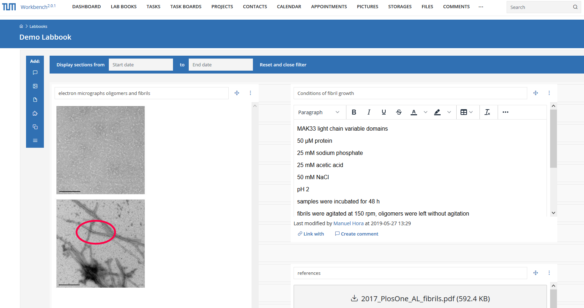
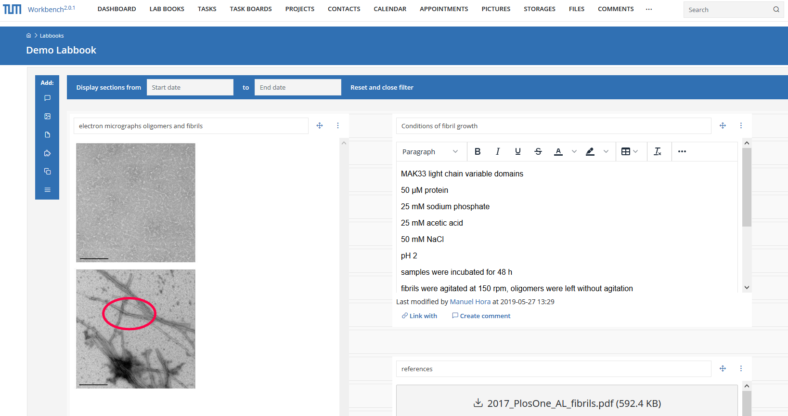

Fork me on GitHub
eWorkbench
electronic working environment for research data and project management
eWorkbench is a generic platform for managing research data and projects. It facilitates data management by enabling collaboration and semi-automatic documentation.
Modules
- Electronic lab notebook
- Task management
- File management
- Contacts and collaborative calendar
- Resource booking (facilities, instruments)
- Image editor
- Project management
- Data management plan
Features
- LDAP compatibility
- Detailed access management
- Version control including change tracking
- User-defined metadata in addition to automatic defaults
- WebDAV accessibility
 

Live system
At the Technical University of Munich (TUM), the University Library runs eWorkbench as the TUM Workbench service.Development
- Coordination by TUM Library
- Collaboration with Anexia Company